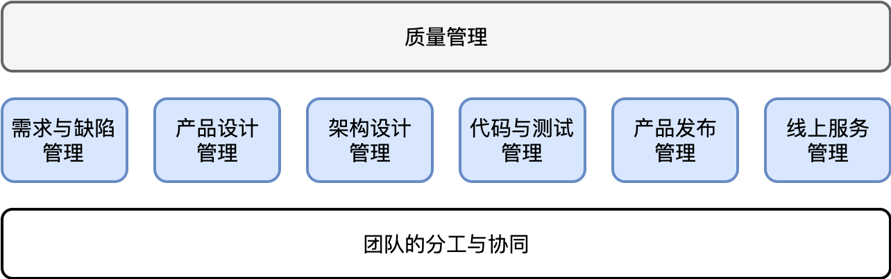
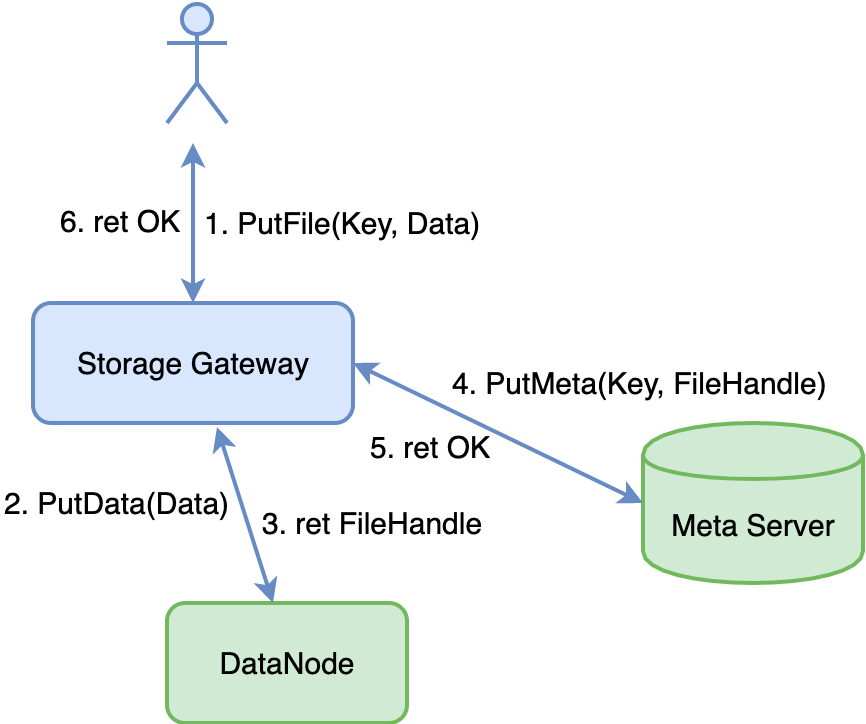

- 00 开篇词 怎样成长为优秀的软件架构师？.md
- 01 架构设计的宏观视角.md
- 02 大厦基石：无生有，有生万物.md
- 03 汇编：编程语言的诞生.md
- 04 编程语言的进化.md
- 05 思考题解读：如何实现可自我迭代的计算机？.md
- 06 操作系统进场.md
- 07 软件运行机制及内存管理.md
- 08 操作系统内核与编程接口.md
- 09 外存管理与文件系统.md
- 10 输入和输出设备：交互的演进.md
- 11 多任务：进程、线程与协程.md
- 12 进程内协同：同步、互斥与通讯.md
- 13 进程间的同步互斥、资源共享与通讯.md
- 14 IP 网络：连接世界的桥梁.md
- 15 可编程的互联网世界.md
- 16 安全管理：数字世界的守护.md
- 17 架构：需求分析 (上).md
- 18 架构：需求分析 (下) · 实战案例.md
- 19 基础平台篇：回顾与总结.md
- 20 桌面开发的宏观视角.md
- 21 图形界面程序的框架.md
- 22 桌面程序的架构建议.md
- 23 Web开发：浏览器、小程序与PWA.md
- 24 跨平台与 Web 开发的建议.md
- 25 桌面开发的未来.md
- 26 实战（一）：怎么设计一个“画图”程序？.md
- 27 实战（二）：怎么设计一个“画图”程序？.md
- 28 实战（三）：怎么设计一个“画图”程序？.md
- 29 实战（四）：怎么设计一个“画图”程序？.md
- 30 实战（五）：怎么设计一个“画图”程序？.md
- 31 辅助界面元素的架构设计.md
- 32 架构：系统的概要设计.md
- 33 桌面开发篇：回顾与总结.md
- 34 服务端开发的宏观视角.md
- 35 流量调度与负载均衡.md
- 36 业务状态与存储中间件.md
- 37 键值存储与数据库.md
- 38 文件系统与对象存储.md
- 39 存储与缓存.md
- 40 服务端的业务架构建议.md
- 41 实战（一）：“画图”程序后端实战.md
- 42 实战（二）：“画图”程序后端实战.md
- 43 实战（三）：“画图”程序后端实战.md
- 44 实战（四）：“画图”程序后端实战.md
- 45 架构：怎么做详细设计？.md
- 46 服务端开发篇：回顾与总结.md
- 47 服务治理的宏观视角.md
- 48 事务与工程：什么是工程师思维？.md
- 49 发布、升级与版本管理.md
- 50 日志、监控与报警.md
- 51 故障域与故障预案.md
- 52 故障排查与根因分析.md
- 53 过载保护与容量规划.md
- 54 业务的可支持性与持续运营.md
- 55 云计算、容器革命与服务端的未来.md
- 56 服务治理篇：回顾与总结.md
- 57 心性：架构师的修炼之道.md
- 58 如何判断架构设计的优劣？.md
- 59 少谈点框架，多谈点业务.md
- 60 架构分解：边界，不断重新审视边界.md
- 61 全局性功能的架构设计.md
- 62 重新认识开闭原则 (OCP).md
- 63 接口设计的准则.md
- 64 不断完善的架构范式.md
- 65 架构范式：文本处理.md
- 66 架构老化与重构.md
- 67 架构思维篇：回顾与总结.md
- 68 软件工程的宏观视角.md
- 69 团队的共识管理.md
- 70 怎么写设计文档？.md
- 71 如何阅读别人的代码？.md
- 72 发布单元与版本管理.md
- 73 软件质量管理：单元测试、持续构建与发布.md
- 74 开源、云服务与外包管理.md
- 75 软件版本迭代的规划.md
- 76 软件工程的未来.md
- 77 软件工程篇：回顾与总结.md
- 加餐 如何做HTTP服务的测试？.md
- 加餐 实战：“画图程序” 的整体架构.md
- 加餐 怎么保障发布的效率与质量？.md
- 热点观察 我看Facebook发币（上）：区块链、比特币与Libra币.md
- 热点观察 我看Facebook发币（下）：深入浅出理解 Libra 币.md
- 用户故事 站在更高的视角看架构.md
- 答疑解惑 想当架构师，我需要成为“全才”吗？.md
- 结束语 放下技术人的身段，用极限思维提升架构能力.md
- 课外阅读 从《孙子兵法》看底层的自然法则.md
70 怎么写设计文档？
你好，我是七牛云许式伟。
在 “[68 | 软件工程的宏观视角]” 一讲中，我们用最基本的 “瀑布模型” 来描述现代软件工程的全过程，大体如下：

在这个过程中，有两个阶段非常关键：一个是 “产品设计”，一个是 “架构设计”。产品设计由产品经理主导，关注的是 “如何以产品特性来系统化地满足用户需求”。架构设计由架构师主导，关注的是 “业务系统如何系统化地进行分解与交付”。
“设计” 一词非常精妙。无论是 “产品设计”，还是 “架构设计”，其实谈的都是 “需求如何被满足” 这件事情的共识。无论是 “产品文档”，还是 “架构文档”，它们都是设计文档的一种，都有团队内及团队间的协同价值。
上一讲 “[69 | 团队的共识管理]” 我们已经从团队的协同角度，谈了共识的重要性。本质上，我们也是在谈 “设计” 的重要性。换个角度来说，一个企业的使命、愿景与价值观，何尝不是这个企业最高维度的 “设计” 呢？
产品经理与架构师是一体两面，对人的能力要求的确会比较像，但是分工不同，关注的维度不同。产品经理关注的维度，其关键词是：用户需求、技术赋能、商业成功。而架构师关注的维度，其关键词是：用户需求、技术实现、业务迭代。
今天我们谈的 “设计文档”，重点聊的是 “架构设计文档” 怎么写，但是本质上所有 “设计文档” 的内容组织逻辑，都应该是相通的。它们的内容大体如下：
- 现状 ：我们在哪里，现状是什么样的？
- 需求：我们的问题或诉求是什么，要做何改进？
- 需求满足方式：
- 要做成什么样，交付物规格，或者说使用界面（接口）是什么？
- 怎么做到？交付物的实现原理。
关于设计文档内容组织的详细说明，我们在前面 “[45 | 架构：怎么做详细设计？]” 中已经进行过交代。概括来说，这些设计文档要素的关键在于以下几点。
现状：不要长篇累牍。现状更多的是陈述与我们要做的改变相关的重要事实，侧重于强调这些事实的存在性和重要性。
需求：同样不需要长篇累牍。痛点只要够痛，大家都知道，所以需求陈述是对痛点和改进方向的一次共识确认。
需求满足方式：要详写，把我们的设计方案谈清楚。具体来说，它包括 “交付物规格” 和 “实现原理” 两个方面。
交付物规格，或者说使用界面，体现的是别人要怎么使用我。对于 “产品设计”，交付物规格可能是 “产品原型”。对于 “架构设计”，交付物规格可能是 “网络 API 协议” 或者 “包（package）导出的公开类或函数”。
实现原理，谈的是我们是怎么做到的。对于 “产品设计”，它谈的是用户需求对应的 UserStory 设计，也就是业务流具体是怎么完成的。而对于 “架构设计”，它谈的是 UserStory 具体如何被我们的程序逻辑所实现。
以下这个公式大家都耳熟能详了：
程序 = 数据结构 + 算法
它是一个很好的指导思想。当我们谈程序实现逻辑时，我们总是从数据结构和算法两个维度去描述它。其中，“数据结构” 可以是内存数据结构，也可以是外存数据结构，还可以是数据库的 “表结构”。“算法” 基于 “数据结构”，它描述的是 UserStory 的具体实现，它可以是 UML 时序图（Sequence Diagram），也可以是伪代码（Pseudo Code）。
多个设计方案的对比
在现实中，一篇设计文档有时候不是只有一个设计方案，而是有多个可能的需求实现方式。在这个时候，通常我们会概要地描述清楚两个设计方案的本质差别，并且从如下这些维度进行对比：
- 方案的易实施性与可维护性。
- 方案的时间复杂度与空间复杂度。
不同的业务系统倾向性不太一样。对于绝大部分业务，我们最关心的是工程效率，所以方案的易实施性与可维护性为先；但是对于部分对成本与性能非常敏感的业务，则通常在保证方案的时间复杂度与空间复杂度达到业务预期的前提下，再考虑工程效率。
在确定了设计方案的倾向性后，我们就不会就我们放弃的设计方案做过多的展开，整个设计文档还是以描述一种设计方案为主。
如果我们非要写两套设计方案，这时应该把设计文档分为两篇独立的设计文档，而不是揉在一起。
你可能觉得没有人会这么不怕麻烦，居然写两套设计方案。但是如果两套设计方案的比较优势没有那么显著时，现实中写两套设计方案确实是存在的，并且应该被鼓励。
为什么这么说？
这是因为 “设计” 是软件工程中的头等大事，我们应该在这里 “多浪费点时间”，这样的 “浪费” 最终会得到十倍甚至百倍以上的回报。
使用界面（接口）
在描述交付物的规格上，系统的概要设计，与模块的详细设计很不一样。
对于 “模块的详细设计” 来说，规格描述相对简单。因为我们关注的面只是模块本身，而非模块之间的关系。对于模块本身，我们核心关注点是以下两点：一是接口是否足够简单，是否自然体现业务需求。二是尽可能避免进行接口变更，接口要向前兼容。
关于接口变更，后面有机会我们还会进行详细的讨论，这一讲先略过。
但对于 “系统的概要设计” 来说，我们第一关心的是模块关系，第二关心的才是各个模块的核心接口。这些接口能够把系统的关键 UserStory 都串起来。
表达模块关系在某种程度来说的确非常重要，这可能是许多人喜欢画架构图的原因。
但描述模块间的关系的确是一件比较复杂的事情。我们在 “[32 | 架构：系统的概要设计]” 这一讲中实际上先回避了这个问题。
一种思路是我们不整体描述模块关系，直接基于一个个 UserStory 把模块之间的调用关系画出来。比如对于对象存储系统，我们上传一个文件的业务流程图看起来是这样的：

这类图相信大家见过不少。但它从模块关系表达上并不是好的选择，因为根本并没有对模块关系进行抽象。这类图更多被用在面向客户介绍 API SDK 的背后的实现原理时采用，而非出现在设计文档。
如果只是对于 UserStory 业务流程的表达来说，UML 时序图通常是更好的表达方式。
但是，怎么表达模块关系呢？
一个方法是对模块的调用接口进行分类。通过 “[62 | 重新认识开闭原则 (OCP)]” 这一讲我们知道，一个模块对外提供的访问接口无非是：
- 常规 DOM API，即正常的模块功能调用；
- 事件（Event）的发送与监听；
- 插件（Plugin）的注册。
这些不同类型的访问接口，分别代表了模块间不同的依赖关系。我们回忆一下 MVC 的框架图，如下：

在图中，View 监听 Model 层的数据变更事件。View 转发用户交互事件给 Controller。Controller 则负责将用户交互事件转为 Model 层的 DOM API 调用。
另一个表达模块关系的视角，是从架构分解看，我们把系统看作 “一个最小化的核心系统 + 多个彼此正交分解的周边系统”。例如，我们实战案例 — 画图程序的模块关系图如下：

需要清楚的是，模块关系图的表达是非常粗糙的，虽然它有助于我们理解系统分解的逻辑。为了共识的精确，我们仍然需要将各个模块核心的使用界面（接口）表达出来。
实现原理
谈清楚了交付物的规格，我们就开始谈实现。对于 “[系统的概要设计]” 与 “[模块的详细设计]”，两者实现上的表达有所不同。
对于模块的详细设计来说，需要先交代清楚 “数据结构” 是什么样的，然后再将一个个 UserStory 的业务流程讲清楚。
对于系统的概要设计来说，核心是交代清楚不同模块的配合关系，所以无需交代数据结构，只需要把一个个 UserStory 的业务流程讲清楚。
无论是否要画 UML 时序图，在表达上伪代码（Pseudo Code）的设计都是必需的。
伪代码的表达方式及语义需要在团队内形成默契。这种伪代码的语义表达必须是精确的。
比如，对于网络请求相关的伪代码，我们可以基于类似 qiniu httptest 的语法，如下：
# 请求
post /v1/foo/bar json {...}
# 返回
ret json {...}
类似地，对于 MongoDB，我们可以直接用 MongoDB 的 JavaScript 脚本文法。对于 MySQL，则可以直接基于 SQL 语法。等等。
结语
前面在 “[45 | 架构：怎么做详细设计？]” 我们实际上已经大体介绍了模块级的设计文档怎么写。所以这一讲我们主要较为全面地补充了各类设计文档，包括产品设计、系统的概要设计等在细节上与模块设计文档的异同。
如果你对今天的内容有什么思考与解读，欢迎给我留言，我们一起讨论。下一讲我们谈谈 “如何阅读别人的代码”。
如果你觉得有所收获，也欢迎把文章分享给你的朋友。感谢你的收听，我们下期再见。
© 2019 - 2023 Liangliang Lee. Powered by gin and hexo-theme-book.